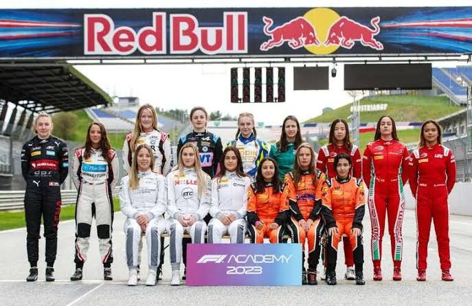

La F1 féminine
La F1 Academy est une initiative récente visant à promouvoir et soutenir les femmes dans le sport automobile, plus précisément dans la Formule 1. Cette académie a été lancée par la Formule 1 en 2023 avec pour objectif de développer les compétences et d'offrir des opportunités aux jeunes femmes pilotes afin de les préparer à des carrières professionnelles dans le sport automobile, y compris en Formule 1.
Contexte et Création
La F1 Academy a été créée pour répondre à la sous-représentation des femmes dans le sport automobile, un domaine historiquement dominé par les hommes. Avant la création de cette académie, il y avait très peu de femmes qui avaient réussi à atteindre les niveaux supérieurs de la compétition, avec seulement quelques femmes ayant participé à des Grands Prix de Formule 1 depuis la création du championnat en 1950.
Objectifs
L'objectif principal de la F1 Academy est de fournir un environnement propice où les jeunes femmes peuvent développer leurs compétences de pilotage, bénéficier de formations techniques et recevoir des conseils en matière de condition physique et de mentalité sportive. En outre, l'académie cherche à sensibiliser le public à la participation des femmes dans le sport automobile et à inspirer une nouvelle génération de pilotes.
Programme et Fonctionnement
Le programme de la F1 Academy comprend plusieurs composantes :
- Entraînement au pilotage: Des sessions régulières sur piste pour améliorer les compétences techniques des pilotes.
- Formation technique : Des cours sur les aspects techniques des voitures de course et la mécanique.
- Condition physique : Des programmes de fitness et de nutrition adaptés aux exigences du sport automobile.
- Développement mental : Des ateliers de préparation mentale pour gérer la pression des compétitions de haut niveau.
Résultats et Impacts
Depuis son lancement, la F1 Academy a réussi à attirer plusieurs jeunes femmes talentueuses de divers horizons, leur offrant une plateforme pour montrer leur potentiel. Bien que l'académie soit encore jeune, les premières retours sont prometteurs, avec des participantes qui montrent des progrès significatifs et qui se rapprochent des niveaux compétitifs requis pour accéder aux catégories supérieures, comme la Formule 3 , la Formule 2 et éventuellement la Formule 1 .
Exemple de Pilotes
Certaines des premières participantes de la F1 Academy sont devenues des figures inspirantes pour les jeunes femmes intéressées par le sport automobile. Ces pilotes travaillent dur pour briser les barrières et montrer que les femmes ont leur place dans ce domaine. Par exemple :
- Marta García : Une jeune pilote espagnole qui a fait ses preuves dans les championnats de karting avant de rejoindre la F1 Academy .
- Amna Al Qubaisi : La première femme des Émirats Arabes Unis à participer à une compétition internationale de Formule 4 et qui bénéficie maintenant du soutien de la F1 Academy pour progresser.
Perspectives d'Avenir
L'avenir de la
F1 Academy
semble prometteur, avec un engagement croissant de la part des parties prenantes de la
Formule 1 pour soutenir cette initiative. L'académie pourrait jouer un rôle crucial dans la diversification du
sport
automobile et dans la promotion de l'égalité des sexes au sein de ce milieu compétitif.
En résumé, la
F1 Academy
représente un pas important vers l'inclusion et l'égalité des chances pour les femmes
dans
le sport automobile, offrant une base solide pour les futures générations de femmes pilotes.